Animate a 2D tour path with density contour(s) and a scatterplot.
display_density2d( center = TRUE, axes = "center", half_range = NULL, col = "black", pch = 20, cex = 1, contour_quartile = c(0.25, 0.5, 0.75), edges = NULL, ... ) animate_density2d(data, tour_path = grand_tour(), ...)
Arguments
| center | if TRUE, centers projected data to (0,0). This pins the center of data cloud and make it easier to focus on the changing shape rather than position. |
|---|---|
| axes | position of the axes: center, bottomleft or off |
| half_range | half range to use when calculating limits of projected. If not set, defaults to maximum distance from origin to each row of data. |
| col | color to be plotted. Defaults to "black" |
| pch | shape of the point to be plotted. Defaults to 20. |
| cex | size of the point to be plotted. Defaults to 1. |
| contour_quartile | Vector of quartiles to plot the contours at. Defaults to 5. |
| edges | A two column integer matrix giving indices of ends of lines. |
| ... | other arguments passed on to |
| data | matrix, or data frame containing numeric columns |
| tour_path | tour path generator, defaults to 2d grand tour |
Examples
animate_density2d(flea[, 1:6])#>#>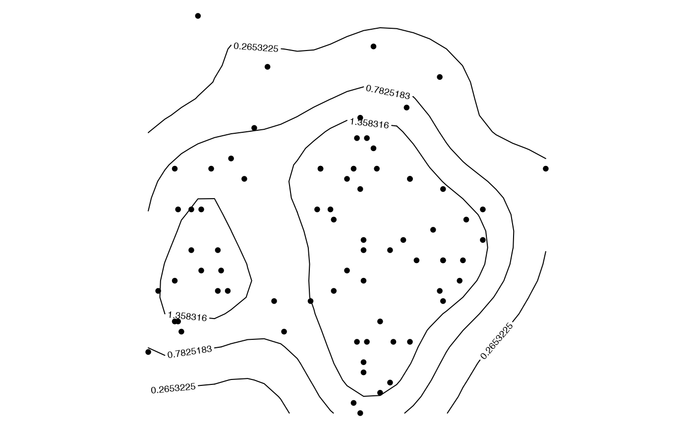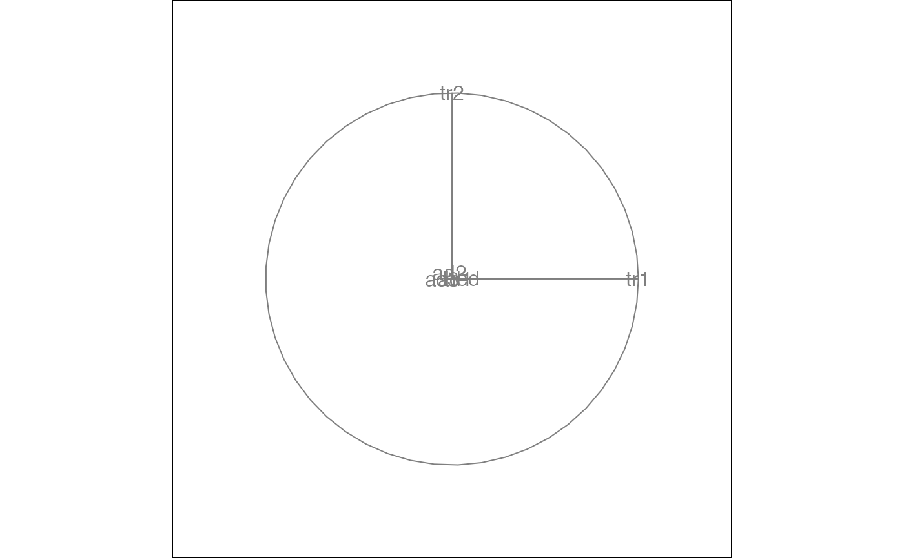#>#>#>#>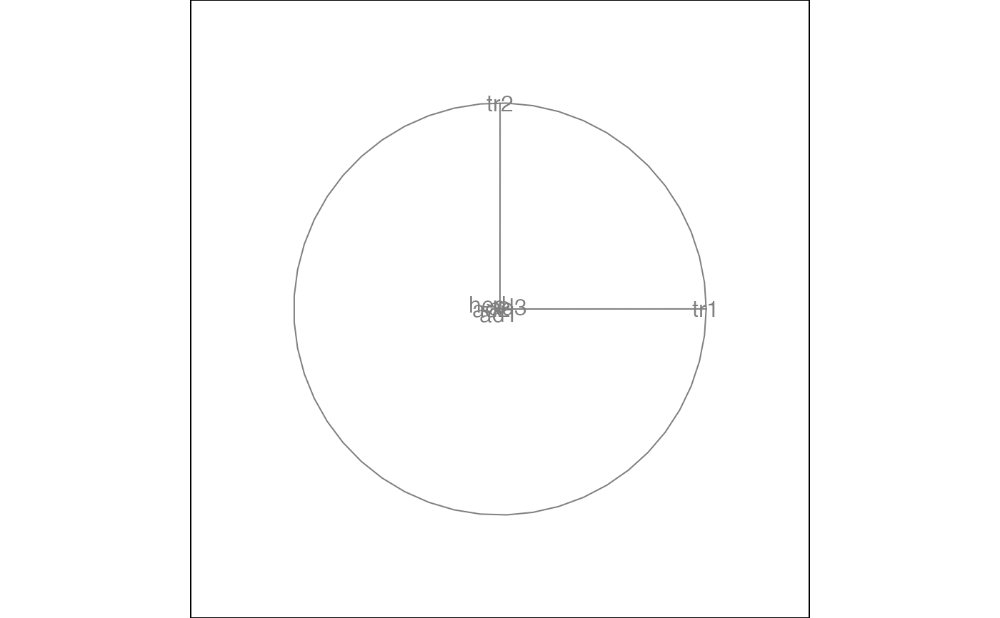#>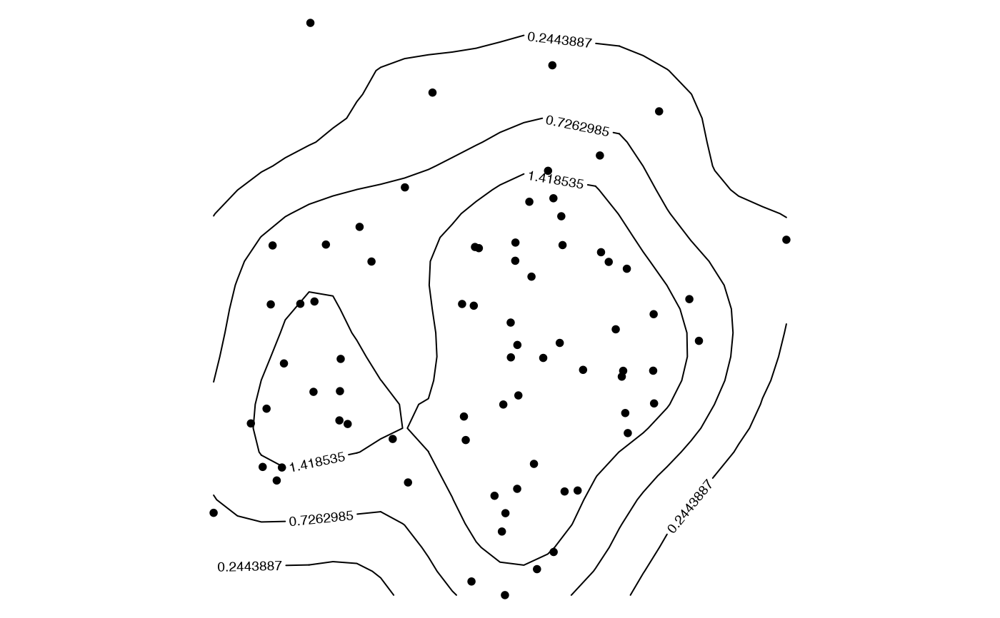#>#>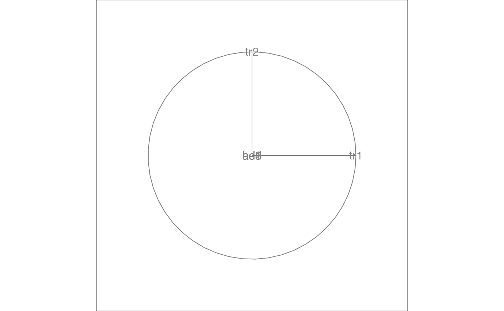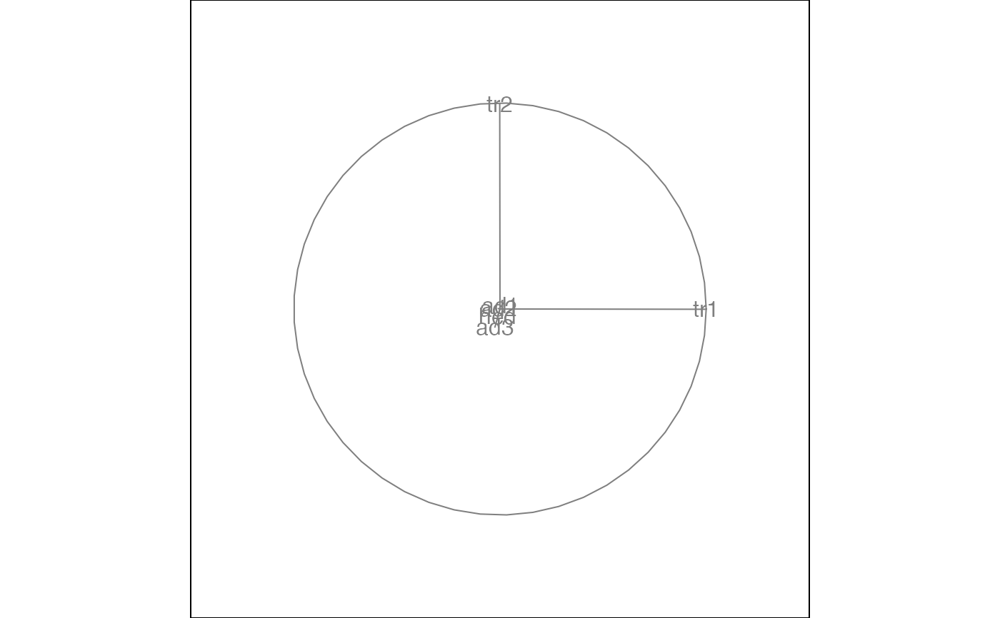#>#> Value 0.457 141.8 % better - NEW BASIS#>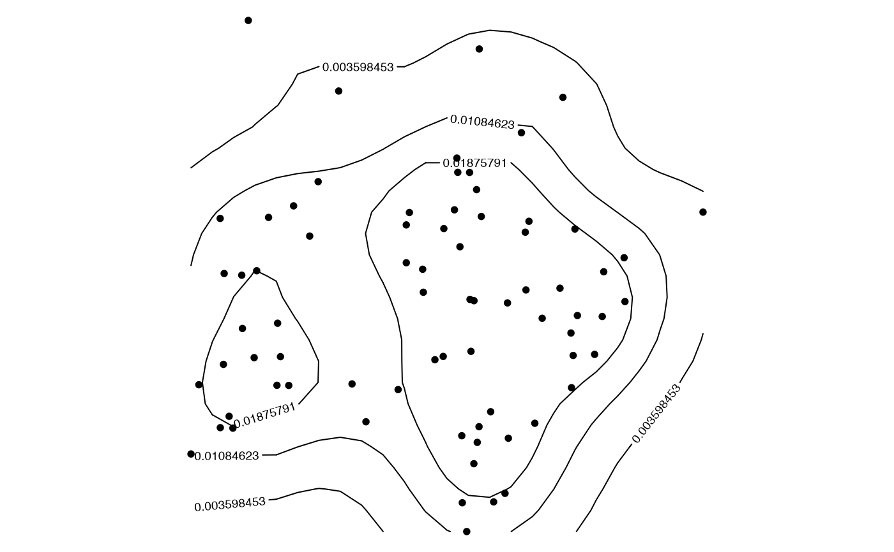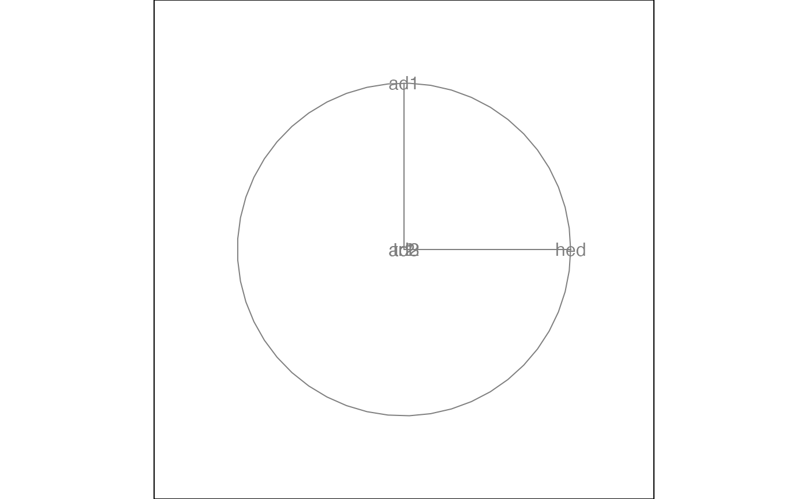animate_density2d(flea[, 1:6], center = FALSE)#>#>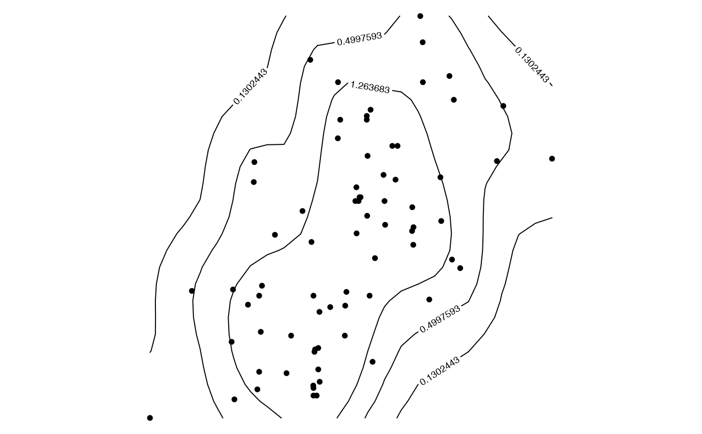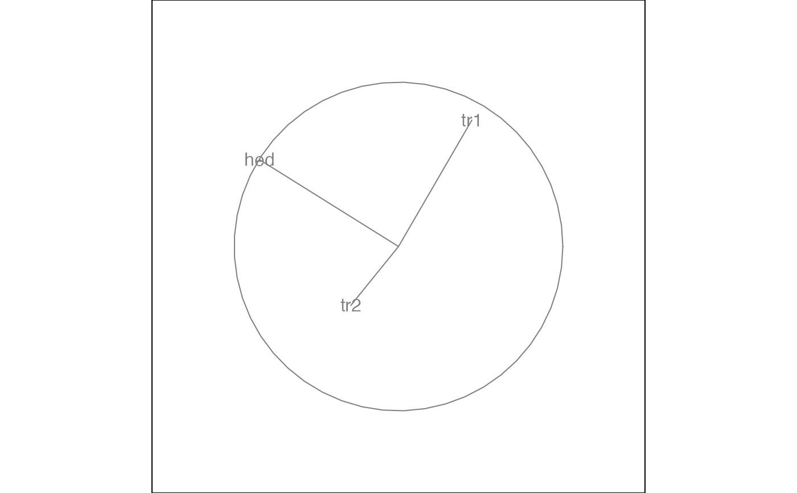# The default axes are centered, like a biplot, but there are other options animate_density2d(flea[, 1:6], axes = "bottomleft")#>#>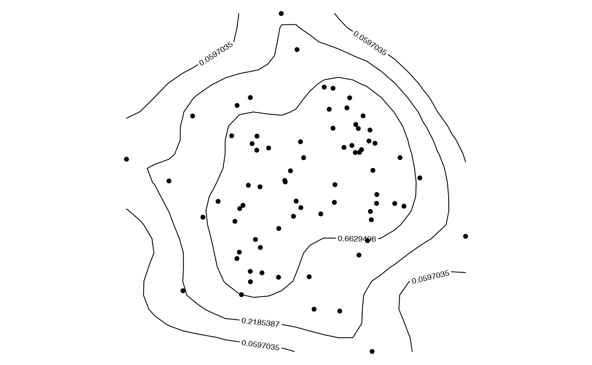animate_density2d(flea[, 1:6], axes = "off")#>#>#>#>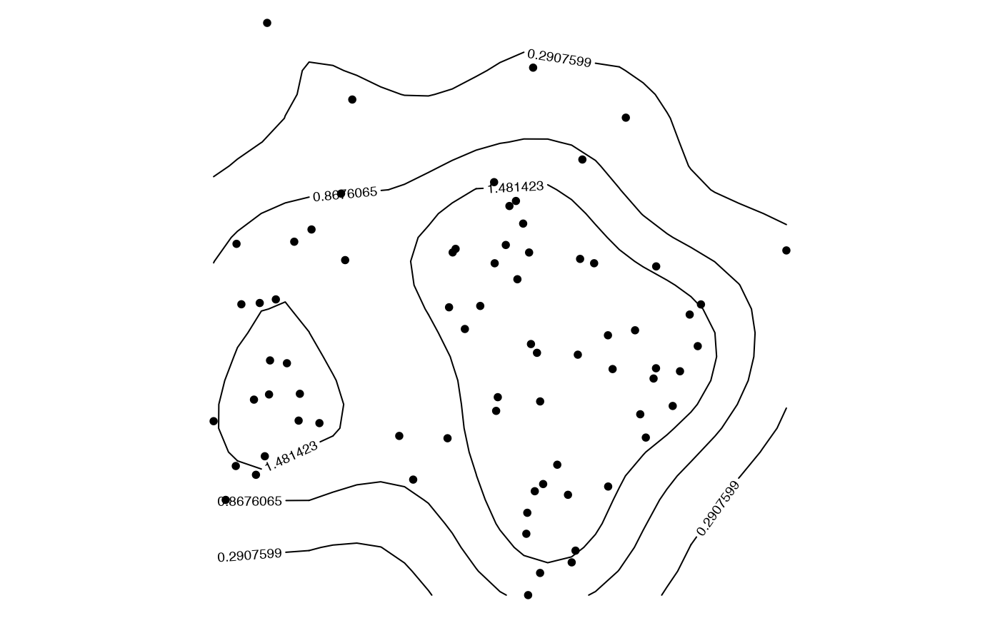animate_density2d(flea[,-7], col=flea$species)#>#>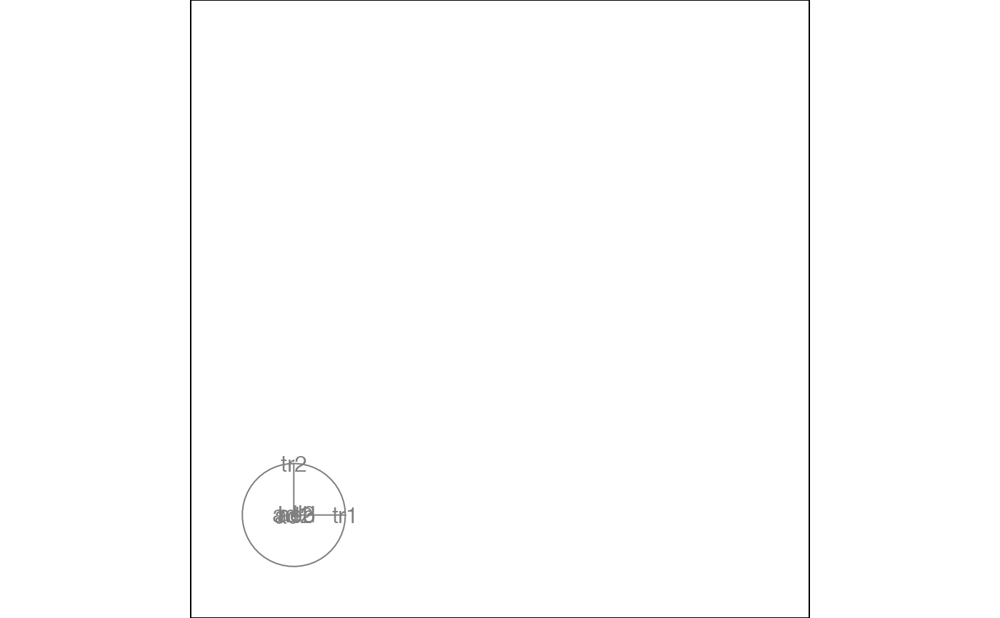# You can also draw lines edges <- matrix(c(1:5, 2:6), ncol = 2) animate(flea[, 1:6], grand_tour(), display_density2d(axes = "bottomleft", edges = edges))#>#>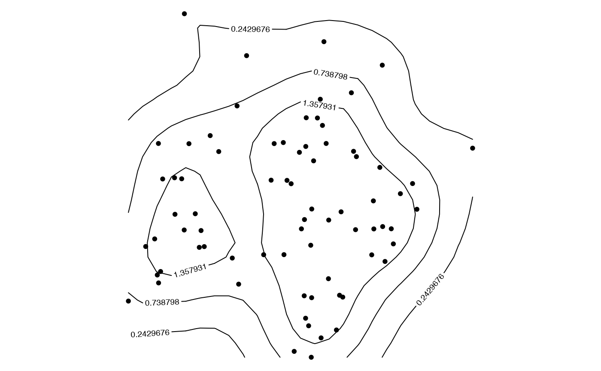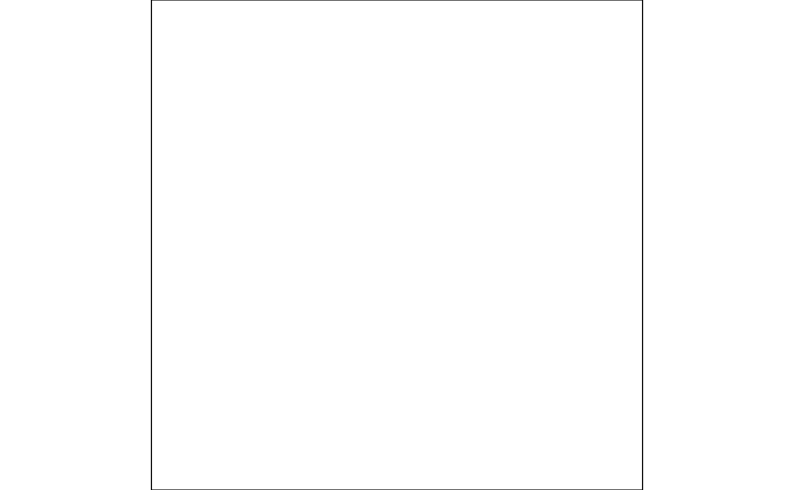